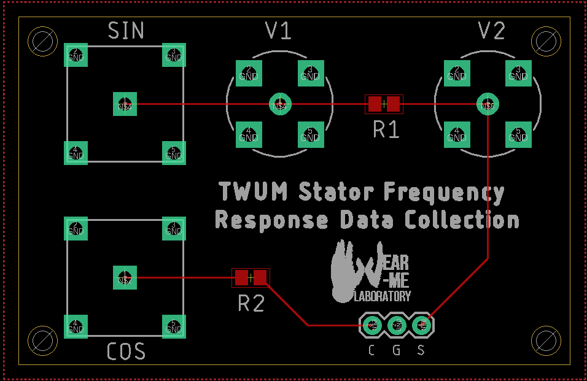

Admittance Data Collection
Project Overview
As part of my master’s thesis, I had to collect the admittance response of the piezoelectric ceramic within the stator of an ultrasonic motor. This is traditionally done using an impedance analyzer, however, very few laboratories have access to one due to their exorbitant costs. As such, I designed a system that was comprised of common equipment found in most laboratories.
System Overview
The system was comprised of a signal generator, an oscilloscope, and a shunt resistor. The shunt resistor was placed in series with the piezoelectric stator with an oscilloscope probe on either side and the signal generator acting as the voltage source for the circuit. The generator supplied the circuit with an AC voltage and the respective voltages on either side of the resistor were captured by the oscilloscope. These voltages were then used to calculate the admittance of the stator through Ohm’s law and the voltage divider formula. The signal generator and oscilloscope were both controlled through a custom MATLAB script.
Schematic
Board Design

The circuit was designed to allow for easy connections between it and the equipment. BNC jacks were used to connect both the signal generator and oscilloscope to the circuit. The oscilloscope probes were connected to the BNC jacks through BNC-probe adapters to minimize noise and ensure stable electrical connections.
3D-Printed Parts
Mount to secure the data collection circuit.
Mount to secure the stator.
Physical Implementation